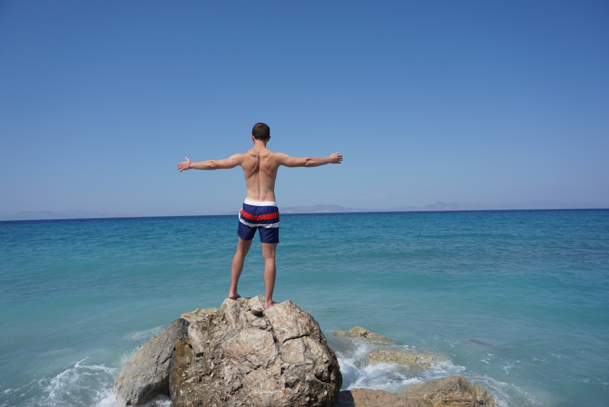

|  | Denis GeistThere will be a time when we must choose between what is easy and what is right Hi, my name is Denis, im 22 years old and I am trying to figure out how to live a fullfiled life. I´m living in a time full of opportunities and I guess thats the reason why it is so hard to figure out what I really want. In psychology this phenomena is called "paradox of choice", which says autonomy and freedom of choice are critical to our well-being and choice is critical to freedom and autonomy. |
What are your goals in life? Which things do you want to change? What brings you the most joy and happiness?
Please leave me a message!